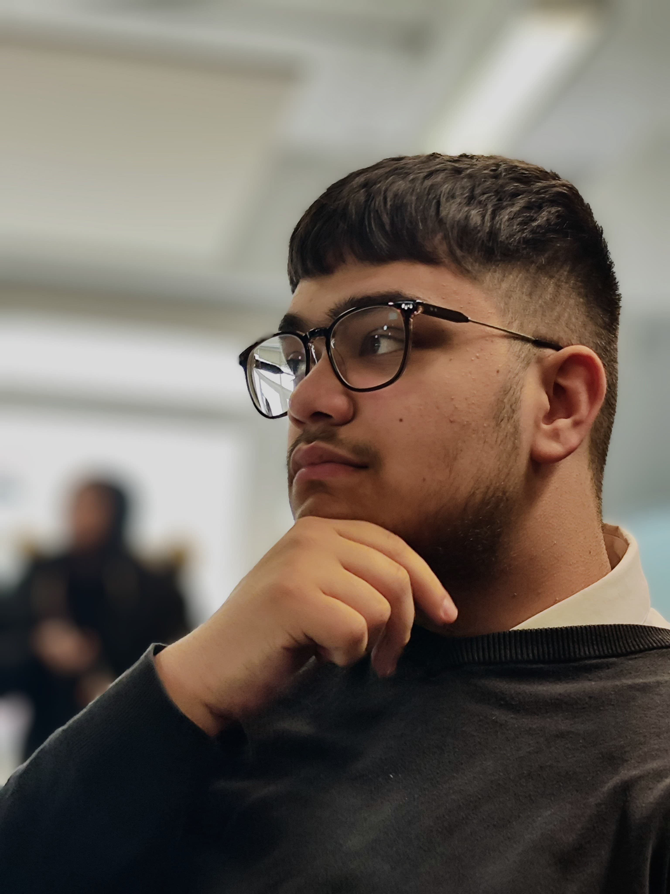

Home Page
Who Am I?

My name is Abdul Wahid. I am currently a student studying at Royal Holloway University of London, taking on a four-year course in Computer Science - Software Engineering, including a year in industry.
I enjoy building projects and taking on new hobbies such as photography, which I have grown to enjoy a lot.
I have created this website as a personal portfolio to share what I am currently learning and creating.
My Aspirations
Talking about aspirations is something I find difficult. To aspire to something would mean having an idea of what you want to achieve and the steps you need to take to reach a long-term goal, like a career.
However, what I do know is that I want to become better at the things that I have a passion for such as programming, photography and learning history.
There’s a quote by a philosopher by the name of Confucius who once said,
"Study the past, if you would divine the future."
By spending time on the things I'm passionate on right now—whether that’s programming, history, or photography—I feel like I’m slowly figuring out my own direction, one step at a time.
My Skills
- HTML/CSS
- Java
- Troubleshooting/Debugging
- Photography
- Photo Editing
- Research